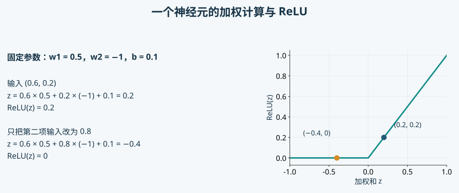
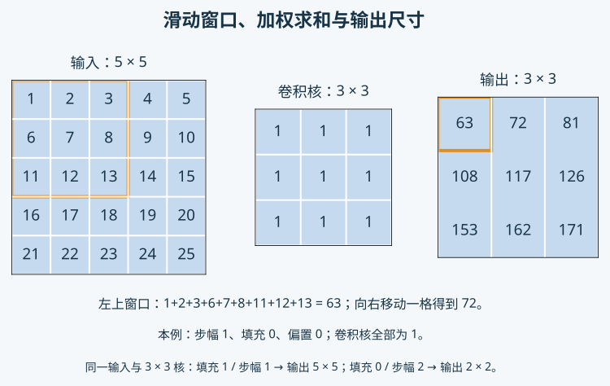
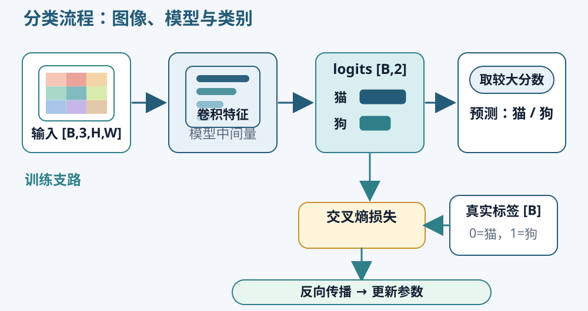
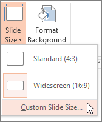
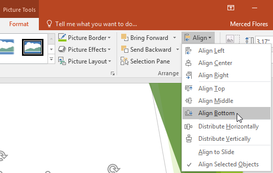
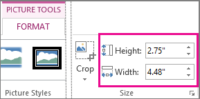
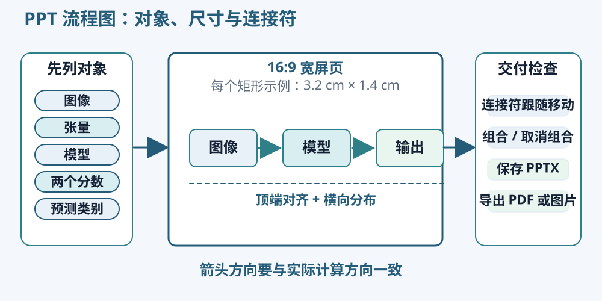
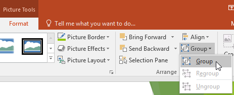
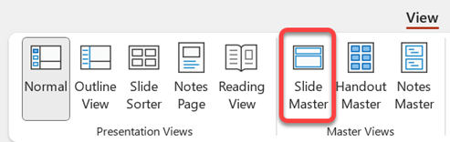

神经网络基础
人工智能与监督学习
人工智能研究让计算机完成通常需要感知、推理、规划等能力的任务。机器学习是其中一类方法，它通过数据调整模型，使模型能够处理新的输入。深度学习主要使用具有多层计算的神经网络，逐层学习适合任务的表示。日常说“训练一个 AI 模型”时，应进一步说明具体任务、输入、输出和训练数据。
猫狗分类属于监督学习：每张训练照片既有输入图像，也有已知类别标签。模型先产生预测，再利用标签计算误差。标签在训练阶段告诉模型当前应该学习什么，预测新照片时则不需要提前知道真实类别。训练样本的标注质量、来源及覆盖范围，都会影响模型能够学到的规律。
分类预测离散类别，回归预测连续数值，分割预测每个位置的类别。三种任务可以使用相似的基础网络操作，但输出形状和损失含义不同。还有无监督、自监督等利用数据的方式，本课程先把具有明确标签的监督学习讲清楚，再用这些知识理解后面的分割和图像重建。
模型、特征与参数
模型是一组把输入转换为输出的计算规则。最简单的规则可以手工固定，更灵活的规则可以包含许多可调整的数值。这些需要在训练中学习的数值称为参数，例如神经网络中的权重和偏置。训练的结果就是一组具体参数，它与网络结构共同决定预测。
特征是用于判断的信息表示。原始 RGB 像素可以作为输入特征；网络中间层计算出的数值，也可以作为后续层的特征。初学时可以想象亮暗变化、局部纹理和形状信息，但实际网络中的一个特征通道通常没有清楚的人类名称。不能只看到某一层的激活，就直接说它专门识别“猫耳朵”。
超参数由我们在训练前或训练过程中设定，例如学习率、批量大小、层数和训练轮数。它们规定怎样训练或采用什么结构，通常不由同一次反向传播直接更新。比较两个方案时，应区分改变了学习参数的起点，还是改变了超参数及模型结构。
一个神经元的具体计算
人工神经元可以理解为一次加权组合及后续变换。假设它接收两个输入 x₁=0.6、x₂=0.2，权重分别为 w₁=0.5、w₂=−1，偏置 b=0.1。先计算加权和 z=w₁x₁+w₂x₂+b，得到 0.5×0.6−1×0.2+0.1=0.2。
权重说明各输入怎样影响结果，偏置允许整体平移输出。这里第二个权重为负，因此提高第二个输入会降低加权和。如果仅把 x₂ 改为 0.8，其他量保持不变，z 就变成 −0.4。这组数值只解释计算关系，没有赋予两个输入任何特定动物含义。

常见激活函数 ReLU 把负值改为 0，非负值保持原值。因此两个例子的输出分别为 0.2 和 0。将来训练会调整权重与偏置，使许多这样的计算组合起来，更适合区分类别。观察单个神经元时，可以先手算加权和，再看激活函数如何改变它。
线性、非线性与多层感知机
线性层进行输入的加权组合；带偏置时，严格说是仿射变换。它能够表达某些简单关系，但仅把多个这样的层相接，中间不加入非线性，整体仍可合并为一次仿射变换。增加层数本身不会自动带来所期待的表达能力。
ReLU 等非线性激活，使不同输入区域能够呈现不同计算行为。多个线性层与非线性交替组合，就能表示更复杂的关系。多层感知机简称 MLP，通常把一个向量送入若干全连接层。全连接表示本层每个输出都可以使用上一层的全部输入。
如果输入向量有 8 个数，一层输出 3 个数，需要 8×3 个权重和 3 个偏置，共 27 个参数。把一张大图片全部展平后送入全连接层，参数数量可能迅速增加，而且原来的邻近关系只通过固定位置间接保留。图像中同一种纹理出现在左边或右边时，网络也需要处理位置变化，这促使我们进一步使用局部连接和共享权重。
继续阅读：《动手学深度学习》多层感知机。示例代码选择 PyTorch 页签，重点对照线性层、激活与参数形状。
卷积网络
卷积与局部窗口
卷积层用一组较小的权重观察局部区域，并在不同空间位置重复使用。这个小权重阵列称为卷积核。同一组权重滑动到别处后继续计算，称为权重共享。它让网络能够在多个位置使用相同的局部检测方式，参数数量也不必随图片面积等比例增加。
先用单通道数值图理解计算。把 1 至 25 按行放入 5×5 网格，采用 3×3 全为 1 的卷积核，偏置为 0。左上窗口包含 1、2、3、6、7、8、11、12、13，加权求和为 63。窗口向右移动一格后，和变成 72；继续移动到最右侧得到 81。

窗口在两个方向逐格移动，得到 3×3 输出，三行分别为 (63,72,81)、(108,117,126)、(153,162,171)。实际训练中的权重会包含不同正负数，输出也不再只是求和。PyTorch 的卷积层采用常见的互相关计算约定，无需手工翻转卷积核；理解局部加权与移动关系即可。
步长、填充与输出尺寸
步长 stride 表示窗口每次移动多少格。上面的步长为 1；改为 2 时，每次跳过一个位置，同样的 5×5 输入和 3×3 核会得到 2×2 输出。较大步长能够减少空间尺寸，但也减少了输出采样位置。
填充 padding 在输入边缘补充数值，常见方式是补零。对 5×5 输入每边补一圈零，再使用 3×3 核、步长 1，会得到 5×5 输出。填充帮助控制尺寸，也影响边缘位置的计算：图外补入的零并非新测得的图像内容。
在不使用空洞卷积时，一条边的输出长度等于“输入长度加两倍填充，再减去核长度，除以步长后向下取整，最后加 1”。例如输入 5、填充 0、核 3、步长 2，得到 ⌊(5−3)÷2⌋+1=2。每次改变设置后先用这个关系检查形状，可以发现网络尺寸变化从哪一层开始。
通道与感受野
RGB 输入具有三个通道。一个输出通道的卷积核需要同时覆盖三个输入通道，对各通道相应窗口加权后汇总，再加偏置。若使用 8 个不同的输出通道，每个通道学习自己的一组权重，形成 8 张特征图。3×3 核、3 个输入通道、8 个输出通道，带偏置时共有 8×(3×3×3+1)=224 个参数。
感受野表示一个输出位置在结构上可能依赖的输入范围。一个步长 1 的 3×3 卷积看到 3×3 邻域；再接一个同样的 3×3 卷积，第二层一个位置可以使用第一层的相邻响应，对原输入的理论感受野扩大为 5×5。步长和池化也会改变这种对应关系。
较大感受野能使用更广的上下文，但并不说明每个输入位置对预测贡献相同。网络前层通常保留较多局部细节，后层组合更大范围的信息。分析模型时，应同时看空间尺寸、通道数量与所覆盖的范围，不能只数网络有多少层。
池化与分类头
池化在局部区域汇总信息。一个 2×2 区域的数值为第一行 (1,3)、第二行 (2,4)，最大池化得到 4，平均池化得到 2.5。采用 2×2 窗口和步长 2，可以让高和宽各减半。它降低后续计算量，同时舍弃区域内部的部分位置信息。
分类任务最后需要整张照片的类别分数。分类头可以先把特征图展平成向量，也可以使用全局平均池化，对每个特征通道的全部空间位置求平均。例如 16 个通道各变成一个均值，得到 16 维向量，再经过线性层生成猫和狗两个分数。
这些结构提供了组织计算的方式，不保证某一种小网络在所有数据上更好。独立项目可以先选择能够解释、计算量合适的结构，确认输入和输出正确，再用固定数据比较改变一项结构或训练设置的影响。
继续阅读：《动手学深度学习》图像卷积，对照其中的窗口图与互相关计算。
损失与模型学习
logits、Softmax 与交叉熵

分类头输出的原始类别分数称为 logits。两个类别时，每张图输出两个数，顺序与类别表一致。例如猫为第 0 类、狗为第 1 类，分数为 (1,2) 时，最大分数对应狗。logits 可以为负，也不需要相加等于 1。
Softmax 先对每个分数取指数，再除以所有指数之和。对 (1,2)，结果约为 (0.269,0.731)。它们反映模型在当前两个类别之间的相对倾向。把两个 logits 同时加上 100，结果仍然相同，因为相对差异没变；实际库会采用数值稳定的计算方式。
交叉熵使用真实类别所对应概率的负自然对数。若真实类别是狗，上述预测的损失约为 −ln(0.731)=0.313；若真实类别是猫，则约为 −ln(0.269)=1.313。真实类别获得的概率越小，损失越大。两类各为 0.5 时，损失约为 0.693，这些具体值能帮助理解损失与“是否分对”之间的区别。
PyTorch 的 CrossEntropyLoss 直接接收原始 logits 和整数类别标签，内部完成所需的稳定计算。训练前重复执行 Softmax 会改变传入损失的对象。对于批量 B，常见输入形状为 [B,2]，标签为 [B]；标签是类别编号，不是把猫与狗放在连续刻度上的测量值。
梯度与参数更新
梯度描述当前参数附近，参数发生小变化时损失会怎样变化。先看只有一个参数的例子：损失为 L=(w−3)²。w=1 时损失是 4，梯度为 2(w−3)=−4。若学习率为 0.1，按“新参数等于旧参数减去学习率乘梯度”更新，w 变成 1.4，新损失是 2.56。
负梯度使这一步增加 w，因为增加它会在当前位置降低损失。正梯度则使参数减少。神经网络同时包含许多参数，损失还取决于一批图像；每个参数都有对应的梯度。更新能够依据当前批量调整模型，但不能保证每次都改善未见数据的评价指标。
PyTorch 的自动求导 autograd 记录参与计算的运算关系，再通过链式法则计算梯度。前向计算产生预测和损失，反向传播计算参数梯度，优化器根据梯度调整参数，这几项作用要分开理解。把需要求导的中间结果分离出计算图，会影响后续梯度传递。
梯度默认累积，因此常规单批量更新需要清空旧梯度，再计算本次反向传播。仅调用反向传播不会自动改变参数，仅计算损失也不会自动训练。Kaggle 的短例子会让你观察一次更新前后的参数差异，完整训练循环由你在独立项目中实现。
自动求导的计算关系可以结合 PyTorch 自动求导教程 阅读，再在下面的练习中观察梯度和参数变化。
优化器、批量与轮次
随机梯度下降 SGD 使用当前批量提供的梯度更新参数。批量越小，梯度通常波动更明显；批量变大，计算与内存需求也随之变化。带动量的 SGD 会利用近期更新方向，减少某些来回摆动。这里的随机性主要来自抽取与排列样本，以及可能使用的随机变换。
Adam 为不同参数维护梯度及平方梯度的移动统计，并据此调整更新尺度。它经常是实用起点，但不会自动解决错误标签、数据泄漏或不合适的学习率。选择优化器时仍要记录学习率等设置，并观察训练和验证过程。
一个 epoch 通常指训练数据被遍历一遍。若有 1024 个训练样本，每批 32 个，每批更新一次，那么一轮包含 32 次更新。step 常指一次更新，但不同记录工具也可能有自己的计数方式，应在曲线中说明。相同轮数使用不同数据量，更新次数可能不同。
学习率过大时，参数可能越过合适区域，损失剧烈波动；过小时，变化可能很慢。比较两个学习率，应尽量采用相同初始化、数据顺序和计算条件。只看一次更新量能够理解步幅，却不能替代完整验证结果。
训练与评价
训练、验证与测试
训练集用于计算梯度与更新参数，验证集用于比较设置及选择权重，测试集用于方案确定后的最终评价。它们承担不同作用。若不断根据测试分数改学习率、挑训练轮次或筛选样例，测试数据就已经参与了方案选择。
使用 Oxford-IIIT Pet 时，保留官方测试部分，从 trainval 中建立自己的训练与验证划分，保存文件名和类别统计。猫狗两类应在各集合中出现，同一张图片的不同裁剪不能跨训练与测试。后续比较共用同一划分，避免把样本难度变化当成方法变化。
验证选择规则在实验前写清，例如采用验证损失最低的权重。训练损失反映拟合训练目标的程度，验证损失和指标帮助观察对未参与更新样本的表现。记录曲线时保留实际数值、轮次、配置和权重路径，方便检查模型是在哪一轮被选中的。
过拟合、增强与迁移学习
模型可能记住训练照片中的细节，而没有形成对新图片同样有效的判断。训练表现持续改善、验证表现停滞或变差，是过拟合的常见迹象。也需要先排查两组数据的处理方式、类别组成和标签质量，不能见到差距就仅靠加深网络解决。
数据增强在训练时改变图像，但应保留任务标签的含义。水平翻转通常不会把猫变成狗；过大的裁剪却可能把动物完全裁掉。颜色变化过强也可能产生与真实照片差别很大的输入。先看增强后的图，再决定是否合理；验证和测试采用稳定、预先确定的处理。
迁移学习使用在其他数据上学习过的参数作为起点。可以先固定部分特征层，只训练新的分类头，也可以进一步微调网络。预训练权重通常有明确的尺寸、颜色和标准化要求，需要一起读取。记录权重来源和哪些层被更新，才能解释它与从随机参数开始的模型有何不同。
Dropout 在训练时随机屏蔽部分激活，BatchNorm 使用批量统计并维护运行信息，它们在训练和评价模式下的行为不同。切换为评价模式与关闭梯度记录是两件事：前者改变相应层的行为，后者减少求导开销。保存、加载并重新评价时，两者都要按用途设置。
分类指标与错误分析
准确率等于正确预测数除以总样本数。假设测试集有 40 张猫和 60 张狗，模型把 35 张猫判为猫、5 张猫判为狗，把 45 张狗判为狗、15 张狗判为猫，准确率就是 (35+45)÷100=80%。单个准确率没有显示两类错误怎样分布，因此还要查看混淆矩阵。
| 真实类别 / 预测类别 | 猫 | 狗 |
|---|---|---|
| 猫 | 35 | 5 |
| 狗 | 15 | 45 |
以狗为正类时，精确率是被预测为狗的照片中有多少真的是狗，即 45÷50=90%；召回率是真实狗照片中有多少被找出，即 45÷60=75%。F1 使用精确率与召回率的调和平均，本例约为 81.8%。更换正类会改变含义，需要把类别约定写清楚。
若没有任何照片被预测为狗，狗的精确率分母为零；若测试中没有真实狗，召回率分母为零。知识练习把这类情况记为不可计算，同时报告分母。它们与实际测得的零精确率或零召回率不同。
保留逐张预测后，可以查看同一种错误是否集中出现。先描述动物大小、遮挡、拍摄角度和背景等可见信息，再提出能够检查的解释。固定一组展示样例，并另行收集错误样例，能够同时看到稳定比较和具体问题。
分数与不确定性
Softmax 给出较高分数，说明模型在当前类别之间偏向某个选择，并不自动说明这个选择可靠。一张羊的照片也会被两类模型强制分配给猫或狗，甚至出现很高分数。与训练来源不同的背景、画质或对象，都可能导致这种现象。
照片本身模糊、动物被遮挡，以及模型未学到相关样式，都可能使判断困难。这些原因需要借助具体图像和额外评价区分。若要解释“预测 0.8 的照片是否约有八成正确”，还需要校准分析；仅凭一次输出无法确认这种对应。
本次项目先保存模型分数、真实类别和样本编号，比较正确与错误照片的分数分布，并把观察写进结果说明。没有显著改善的实验也应保留，说明数据范围、运行次数及实际差异。这样既能检查自己的实现，也能为下一次比较提出具体问题。
PPT 流程图与排版实践
猫狗识别包含图像、张量、模型、分数和类别。把这些对象画出来，可以检查自己是否真正理解数据怎样使用，也可以让别人迅速理解程序。练习分为两页：第一页画可编辑的计算关系，第二页展示自己训练得到的实际结果。
下面结合视频教程与真实软件界面练习。正文采用桌面 PowerPoint 常见中文菜单，英语截图中的对应名称放在括号中。版本不同可能改变选项卡名称，例如旧版“绘图工具—格式”在新版中常显示为“形状格式”。
画布、参考线与基本对象
新建演示文稿，选择“设计 / Design → 幻灯片大小 / Slide Size → 宽屏 16:9”，再选择空白版式。宽屏适合投影和屏幕阅读。学习海报则需要另设 A1 画布；画布尺寸先确定，后面调整对象时才有固定参照。
在“视图 / View”中打开标尺、网格线或参考线。先为左右页边距和标题底部设参照位置，给文字和图像留下共同边界。参考线只帮助排版，不会作为线条出现在最终 PDF 中。

形状、文本框、图片和图表是不同对象。形状可以容纳文字，并通过连接点接收连接符；图片适合展示真实样例；图表用于说明数值。先列出要表达的对象与关系，再选择相应类型，不需要把所有内容塞进同一种圆角矩形。
大小、复制与对齐
- 通过“插入 → 形状”放置一个矩形，在“形状格式 / Shape Format → 大小 / Size”输入宽 3.2 cm、高 1.4 cm。输入文字“图像张量”，并设置清楚的字体与填充色。
- 按 Ctrl+D 复制矩形，分别改成“图像处理”“分类模型”“类别分数”等实际名称。复制能保持大小与样式，随后仍需要根据文字长度调整个别框。
- 按住 Shift 逐个选择需要排列的框。在“形状格式 → 对齐 / Align”中选择“对齐所选对象”，再使用“顶端对齐”或“垂直居中”。前者对齐上边缘，后者对齐各框中心的高度。
- 确定最左和最右的两个框的位置后，选中所有框并使用“横向分布 / Distribute Horizontally”。这样可以统一间隔。检查菜单是相对所选对象分布，还是相对整张幻灯片分布。

“对齐”控制共同边界或中心线，“分布”控制间距。可以故意将中间一个框移偏，再分别使用两项命令，观察它们改变了什么。三个以上对象更容易看出分布的作用；只有两个对象时，通常直接确定两端位置更清楚。

上图显示图片的高度与宽度输入框。选中形状时，功能区名称会变为“形状格式”，仍可在大小组输入精确尺寸。图片保持纵横比，形状则按框中文字和排列空间设置宽高。
连接符、层级与组合
使用“插入 → 形状”中的直线或肘形连接符，将线端吸附到两个框的连接点，设置箭头方向。拖动一个框，检查连接符端点是否跟随。普通直线可以用来标注，但未吸附时不会保持对象关系。
训练时，真实类别标签参与损失计算。流程图中应画出“类别分数”和“真实标签”共同指向损失，再标出参数更新；预测新照片时则只走图像输入和模型输出这条路径。箭头的含义比颜色或阴影更重要。

同时选择一组相关形状和连接符，按 Ctrl+G 组合；需要修改内部排列时按 Ctrl+Shift+G 取消组合。遮挡关系可通过“置于顶层 / Bring to Front”“置于底层 / Send to Back”调整。打开“选择窗格 / Selection Pane”，可以按名称选中被遮住的对象，并给对象改成有意义的名字。

如果“组合”按钮为灰色，先检查是否至少选中了两个对象，以及其中是否含标题或内容占位符。可以通过“插入 → 文本框”或“插入 → 图片”建立普通对象，再重新选择。组合成功后，整组外围会出现一个共同的选择框。
就地练习： 把模型与其输出组成一组，移动到页面右侧，确认内部间距没有改变，再检查跨组连接线是否仍指向正确对象。删除装饰线时，通过选择窗格确认没有误删真正的数据连接。
图片裁剪、比例与结果页
第二页放置一张自己的真实测试照片，标明真实类别、预测类别和样本编号，再配一张混淆矩阵或训练曲线。使用“插入 → 图片”导入文件，尽量直接采用生成图表的原始导出文件。
在“图片格式 / Picture Format → 裁剪 / Crop”中调整可见区域。裁剪改变显示范围；拖拽图片侧边并取消纵横比约束会拉伸动物或坐标轴。统一多张样例的高度时，应保持各图的纵横比，必要时使用一致大小的裁剪框。
先设标题、图像和图注的共同边界，再使用对齐与分布。图内字体在最终显示尺寸下仍要可读。若混淆矩阵缩小后数字太小，应在绘图程序中增加文字大小或减少不必要内容，再重新导出。用于解释模型结果的照片与图表保持真实，不通过颜色或比例调整制造更好的结果。
主题、母版与导出
主题统一常用字体与颜色；版式安排标题和正文等占位符；幻灯片母版管理这些版式共用的结构。两页练习可以使用简单统一的版式。后续剑桥组汇报需要多页时，再学习“视图 → 幻灯片母版 / Slide Master”，设置共同标题位置、页码与边距。

在母版视图选中具体版式，调整占位符后关闭母版视图，再将这一版式应用到两张幻灯片。向其中一页添加长标题，观察它是否仍落在正确位置。母版适合管理共同元素，每页不同的实验图和结论仍放在普通视图编辑。
最后保存 PPTX，检查形状、文字和连接符仍能编辑，再导出 PDF。打开 PDF 核对页边距、箭头、文字与图像清晰度。文件名包含项目或实验编号，方便将结果页与真实指标表对应。
| 功能 | 常用操作 | 本次练习中的用途 |
|---|---|---|
| 复制对象 | Ctrl+D | 建立大小和样式一致的流程框 |
| 多选 | Shift + 单击 | 只选择准备对齐或组合的对象 |
| 组合 / 取消组合 | Ctrl+G / Ctrl+Shift+G | 维护一组对象的相对位置 |
| 撤销 | Ctrl+Z | 恢复误移动或误删除 |
| 对齐与分布 | 形状格式 → 对齐 | 统一边界、中心线与间距 |
| 选择被遮挡对象 | 选择窗格 | 检查重叠图形和连接符 |
这两页是全员的绘图与表达练习。H&E–IHC 阶段的正式汇报 PPT 仍仅要求加入剑桥组的同学完成。
独立项目：猫狗识别
使用 Oxford-IIIT Pet 的猫狗标签，在 Kaggle 或本地建立自己的 PyTorch 分类程序。确定数据读取与标签对应、保存训练/验证/测试划分，选择一个能输出两个 logits 的模型，自行编写训练、验证、检查点保存与测试代码。可以查阅 PyTorch 文档和课程短练习，写清借鉴的代码来源。
至少保留训练和验证曲线、测试样本数、准确率、混淆矩阵和若干错误照片。调整一个明确因素，例如学习率或训练增强，固定数据划分后比较两次实验。计算资源有限时可使用明确记录的子集；两个方案使用相同子集，并说明数据规模。
提交可从头运行的项目代码或 Notebook、配置与划分、实际预测和图表，以及一张可编辑的 PPT 流程图和一页结果展示。流程图应画出你自己的图像处理、模型与输出关系；结果页至少包含一个指标和一个具体样例。项目完成标准是程序与结果能被解释和复查，不设置脱离数据规模的统一高准确率门槛。